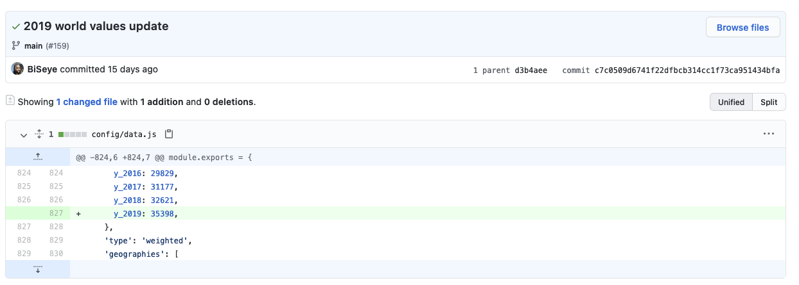

Git training
For DataWorks, 2021What is git?
Git is a free and open source distributed version control system designed to handle everything from small to very large projects with speed and efficiency.https://git-scm.com/
Version control system
- Git stores snapshots (commits) of your files
- You can use these to move backward and forward in time (like a more powerful undo/redo)
- But you can also work on different branches at the same time
Distributed
- Nearly everything happens on your local machine.
- Everyone using a git repository has their own copy of the history of that repository.
- There's no central server
So what is github?
Github is a git server & a web-based interface to browse and manage git repositories.
- You can store a git repo on github (or not!)
- You can use github's interface to merge branches, view pull requests, and even edit files
- Bitbucket and Gitlab are two other similar tools
Key concepts: Staging area

Source: Pro Git, section 1.3
Commands
-
git status - shows which files are tracked, modified,and staged
-
git add ⟨filename or directory⟩ - adds a file or directory to the staging area
-
git add -p - interactively add changes to the staging area one-by-one
-
git add -a - add *all* changed files to the staging area
-
git diff - shows you the current differences between your files on disk and the most recent commit (for staged files only)
-
git reset - resets the staging area (but does not change the files on disk)
-
git reset --hard - resets the staging area and changes the files on disk
Key concepts: Commit
Commands
-
git commit - creates a new commit and open up your default editor to edit the commit message.
(n.b.
git config --global core.editor "nano"to set the default editor to nano). -
git commit -m "⟨commit message⟩" - creates a new commit from the changes which are currently staged, with a shorter (one-line) commit message
-
git diff --check - check if your changes introduce whitespace errors before you make a commit
-
git show - displays the commit message and file changes associated with the current commit
-
git log - shows the commit history
Sidebar: Commit messages

Source: Pro Git, section 5.2
Key concepts: Branch

Commands
-
git checkout ⟨branch-name⟩ - switches to a different branch
-
git checkout -b ⟨branch-name⟩ - creates a new branch, rooted in your current commit
-
git branch - list branches you have locally, with a * next to the branch you're currently on
Your turn!
- Clone the git-training-sample repository
- Create a new branch, named with your name
- Add two commits to the branch:
- In one commit, edit the notes.txt file and add one thing you've learned so far after the colon witn your name
- In a second commit, add a cute animal photo to the photos directory
- Run git log and paste a screenshot of the output to the slack channel
Questions/reflections?
Merging
Once you've done work on a branch, how does it get integrated back into the repository?
Merging via fast-forward
Merging via a merge-commit
Question: Any ideas how this process could could go wrong?
Merge conflicts
Merge conflicts happen when the same part of a file has changed both in the main branch (the branch you're merging into) and in the feature branch you're merging.
Merge conflicts will happen occasionally. But you shouldn't, generally speaking, run into them very often. When they do happen, they're often a sign that something is wrong. It's a good time to ask for help!
-
git push origin ⟨branch-name⟩ - Upload all the most recent commits from your branch locally to the corresponding branch on the remote repository. Note that if there are newer commits on the remote repository, this may throw an error.
-
git pull origin - Download all the commits which are on the remote repository on the corresponding branch, and merge them into your local copy of that branch. Note that this should only ever be a fast-forward merge. If you start getting merge commits from a pull, something is likely wrong with the set-up of your repository.
-
git fetch origin - Downloads the names of branches/tags from the remote repository, so you can check them out locally.
How we (try) to do things with git at DataWorks
- The main branch on a repository only ever contains code/data that is completely working, reviewed and ready to release into the world. Generally, that release happens automatically!
- develop branch contains work that is reviewed and completely working, but may need testing in staging environment before final release. Not all repositories have a develop branch.
- New work only ever happens in named feature branches. One branch for each specific task
Note: This is referred to as the "feature branch" workflow, and it's not the only one folks use. See, e.g. this blog post for more examples.
A step-by-step for making clean branches
- Never make commits to the main or develop branches -- those branches should only change via pull requests in github
- Always checkout the develop (or main, for the data repo) branch locally, make sure that your working directory is "clean" by running git reset --hard, and pull the latest commits from the remote repository
- Before you start work on a new task, think about what you're going to work on!
- Then, make a new branch for the task you're working on, and only include file changes that are relevant to the task at hand in commits to that branch (e.g. by using git add -p to only add files that need to be changed.
- If you need to switch tasks on the same repo, first commit your work, then change branches
- When you're done working on the branch, push it to the remote repo and open a pull request.
- If you're working on a branch with multiple people, be sure to pull in their new work to your local branch each time before you start working, and push up your work each time you're done.
- Optional, but helpful -- before you submit a pull request for a branch you've worked on, first checkout the main branch again, pull in all recent work, and rebase your branch on top of that work. This will also surface any potential merge conflicts and allow you to fix them.
Advanced git commands
git rebase ⟨branch-name⟩- move the root of your current branch to the tip of branch-name. E.g. git rebase main. With -i, allows you to edit commit history too.
git mergetool- interactively resolve merge commits that might come up during a rebase
git cherry-pick ⟨commit-hash⟩- grab a commit (from any branch!) and add it to the tip of your current branch